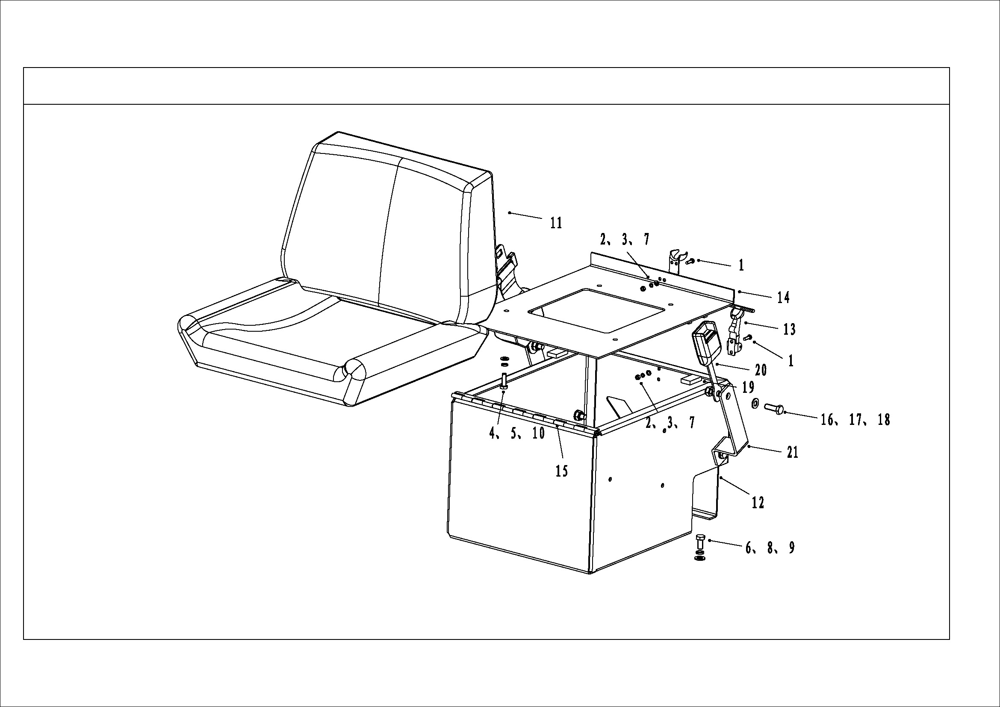

乘员座椅总成 · PASSENGER SEAT ASSEMBLY
Общие сведения
Цифры в круглых скобках показаны на рисунке 1.
ПРЕДУПРЕЖДЕНИЕ
Закон требует наличие ремня безопасности и должен быть закреплен при движении автомобиля.Пассажирское сиденье расположено на правой стороне приборной панели и закреплено на нижней плите кабины с помощью болтов (8), пружинной подушки (9) и плоской подушки (6). Узел сиденья состоит из подушки сиденья и спинки, которые прикреплены к каркасу. Каркас сиденья крепится к каркасу сиденья болт (5), пружинной подушкой (10) и плоской подушкой (4).
Регулируемый ремень безопасности (20) прикреплен к кронштейну (21) ремня безопасности болтами (16), плоской подушкой (19) и самоконтрящимися гайками (17).
Снятие и разборка
Цифры в круглых скобках показаны на рисунке 1.
1. Автомобиль останавливается на ровной поверхности и эффективно тормозится.
2. Вывернуть болт (5), пружинную подушку (10) и плоскую подушку (4) и снять узел сиденья с основания (12) сиденья.
Сборка и установка
Цифры в круглых скобках показаны на рисунке 1.
1. Выравнивать узел сиденья к монтажному отверстию пластины основания сиденья(14) с помощью болта (5), пружинной подушки (10) и плоской подушки (4).
Ремонт
Цифры в круглых скобках показаны на рисунке 1.
1. Обслуживание подушки сиденья и спинки имеет важное значение. Загрязнение, которое накопилось на поверхности коврика в течение длительного времени, затвердеет и повредит поверхность коврика.
2. Промыть подушку сиденья и спинку теплой водой и нейтральным мылом. Протрите ткань сиденья с помощью мыла на мягкой ткани, удалите пенопласт на поверхности сиденья влажной тканью и высушите поверхность сиденья мягкой сухой тканью.
3. Водитель должен проверять ремень безопасности (23) вовремя. Если застежка изношена или повреждена, ремень безопасности треснет или изношен, пряжка не застегивается, ремень безопасности стареет, замените ремень безопасности вовремя.
Примечание:
Даже если нет очевидных проблем, ремни безопасности необходимо заменять один раз в три года.
Кабина – кондиционер
090-0140
Кабина – кондиционер
090-0140
2
3
Кабина - пассажирское сиденье и установка
090-0080
1
Кабина - пассажирское сиденье и установка
090-0080
Operator's Compartment - Passenger Seat and Mounting
090-0080
2
3
Operator's Compartment - Passenger Seat and Mounting
090-0080
1Плоская подушка12Основание вторичного сиденья2Гайка13Крепежный замок вторичного сиденья3Пружинная подушка14Крепежная пластина вторичного сиденья4Плоская подушка15Шарнира5Болт16Болт6Плоская подушка17Самоконтрящаяся гайка7Болт18Плоская подушка8Болт19Буферная подушка9Пружинная подушка20Ремень безопасности10Пружинная подушка21Кронштейн ремня безопасности11Вторичное сиденьеРис. 1 – Схема пассажирского сиденья
Иллюстрации
